藏蓝公文 公文 / 汇报
宋体密排、藏蓝压顶、正红落款，最接近传统红头文件
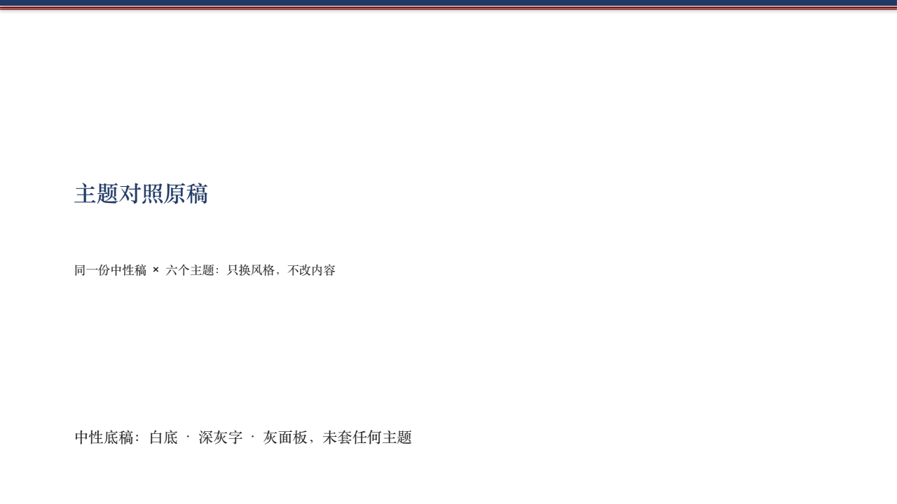
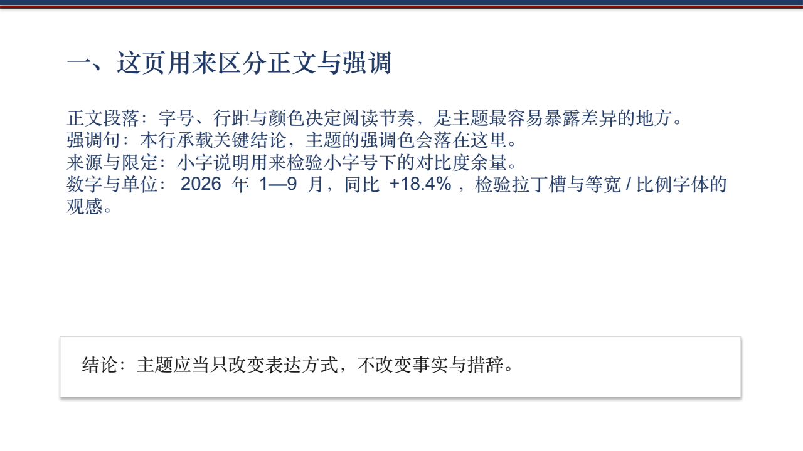
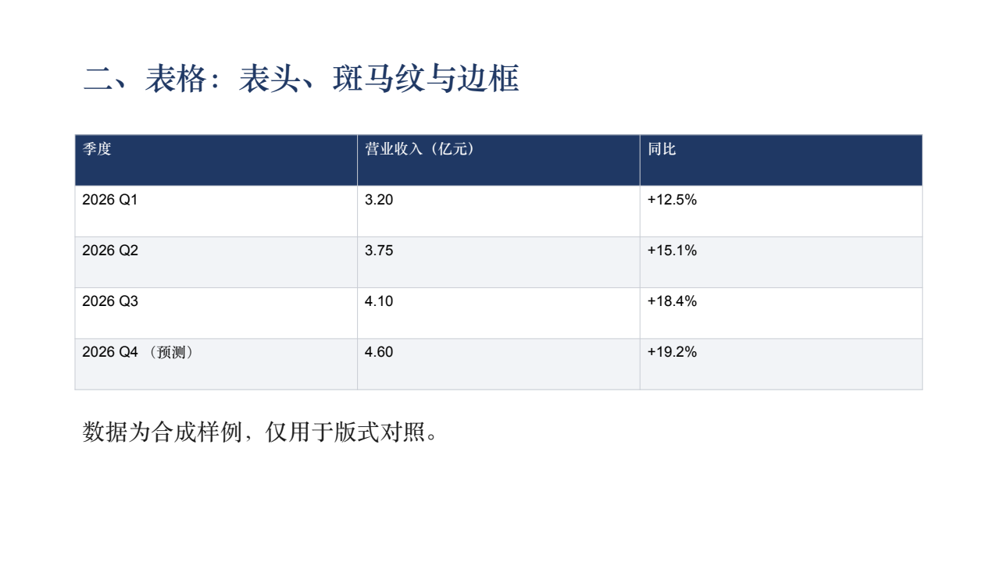
- 主题
- wengao-basic · v1.1.0
- 应用
- APPLIED · 6 页
- 构件
- headband · 18 条 / 6/6 页
- 摘要
- c9c563ccc0feb8b5…
同一原稿 × 6 主题的真实渲染对照；LibreOffice 渲染 ≠ PowerPoint 兼容性
宋体密排、藏蓝压顶、正红落款，最接近传统红头文件



黑体骨架、钢青主色、琥珀强调，信息密度高的汇报稿
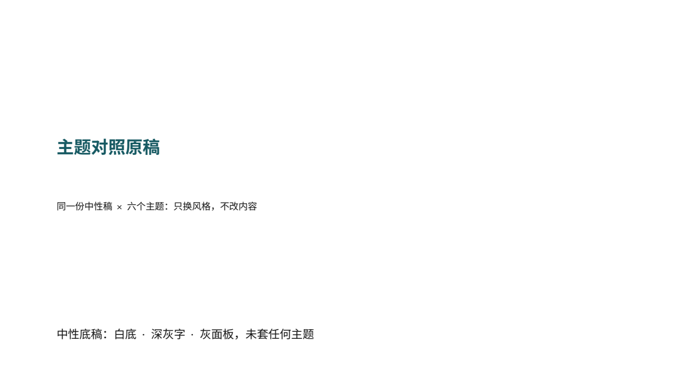
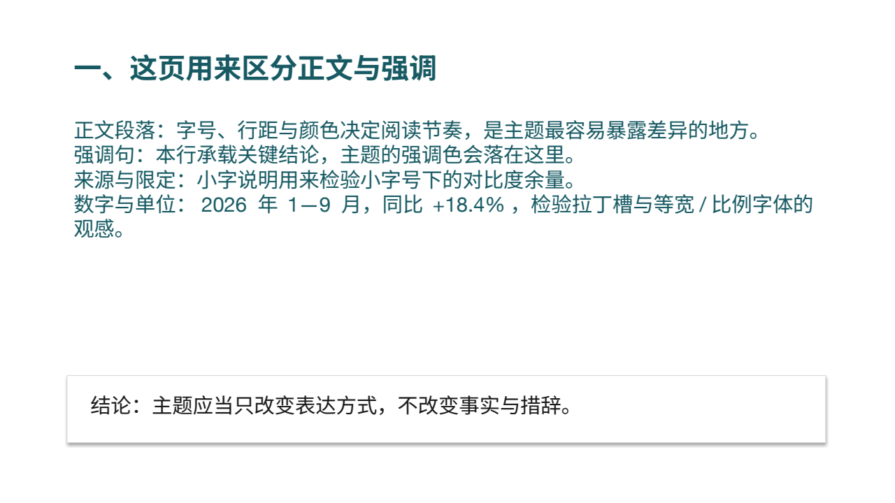
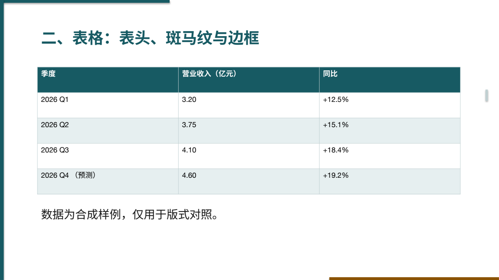
深底霓虹青、品红强调、等宽数字，适合技术路线与发布稿
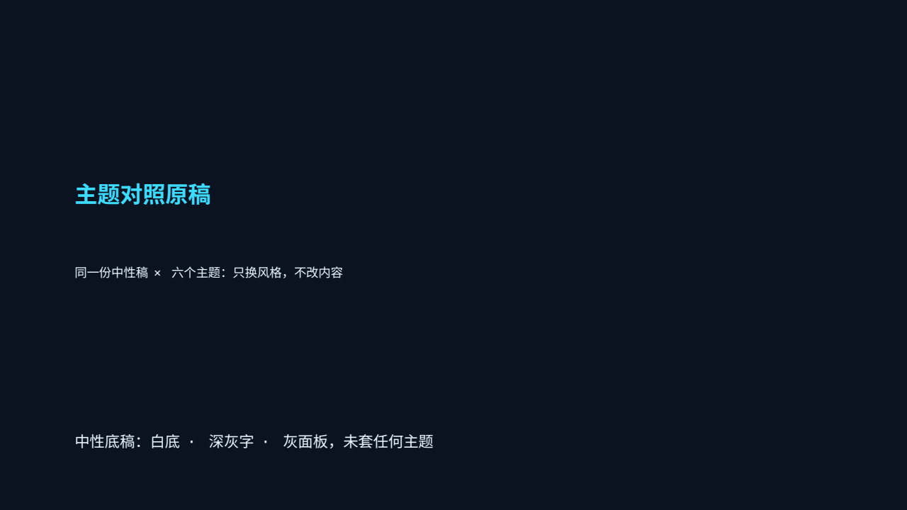
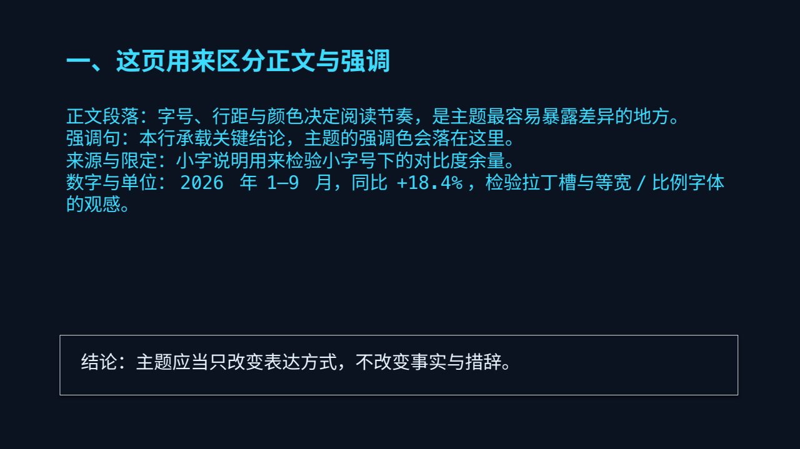
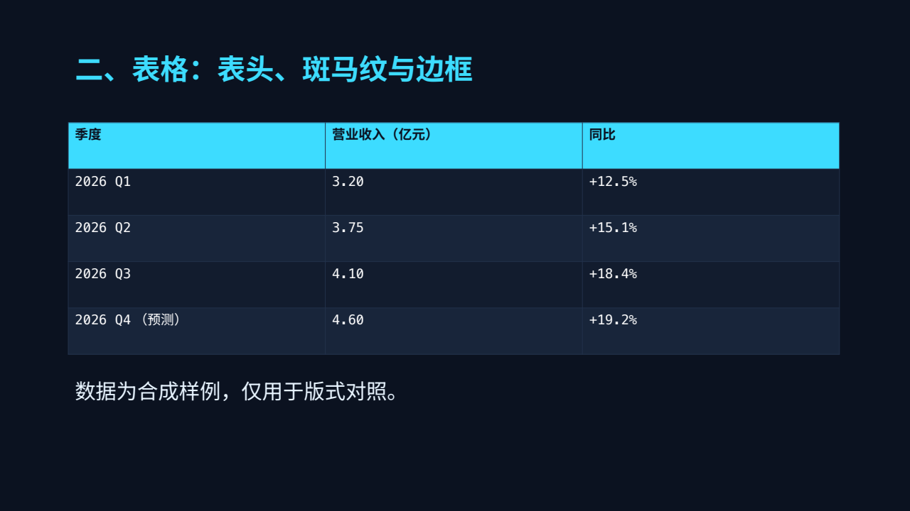
暖白纸底、Georgia 配宋体、几乎不用色块，长文阅读最省力
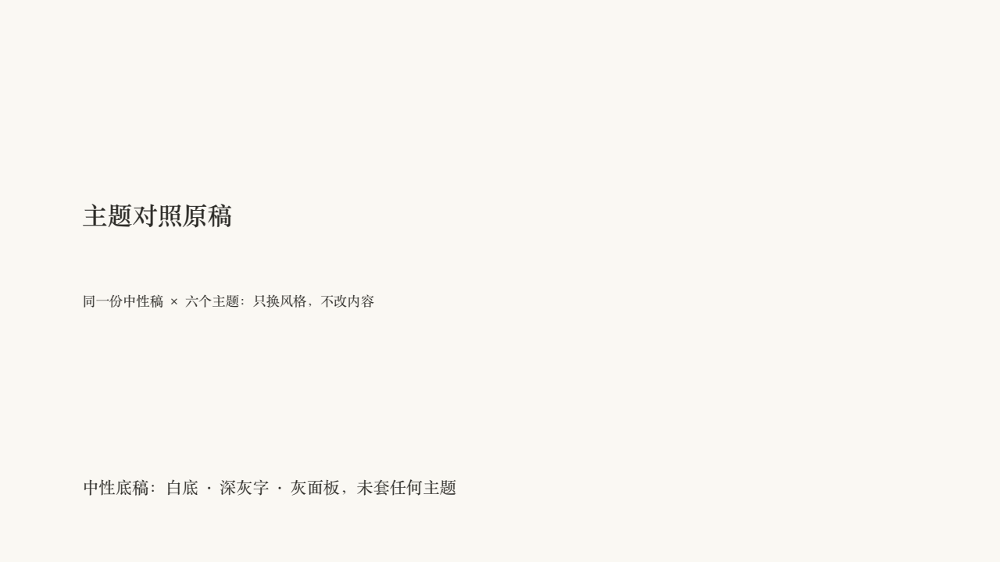
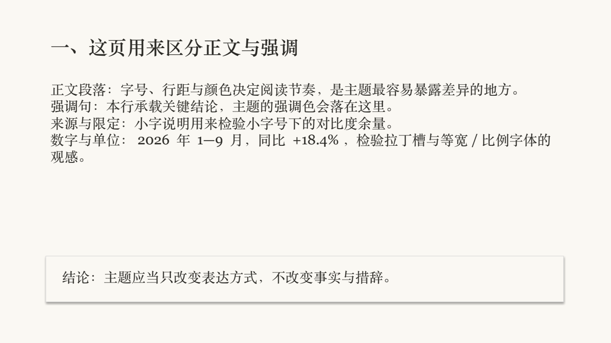
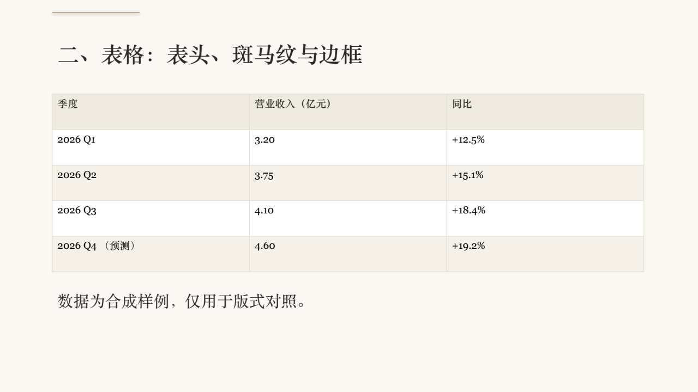
不换肤：识别并保留原稿配色与字体，只做结构、度量与对齐精修
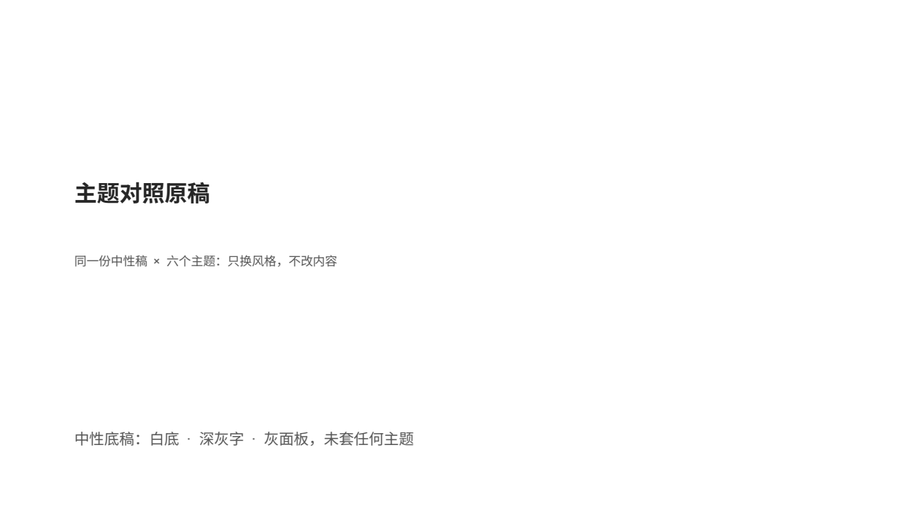
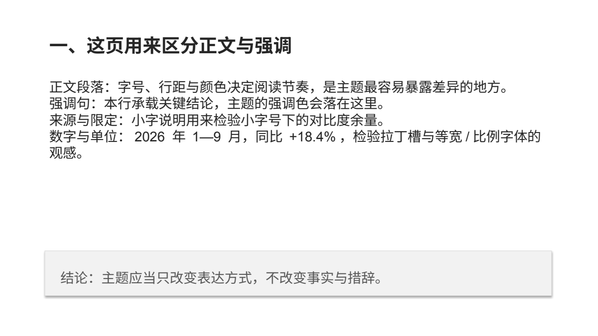
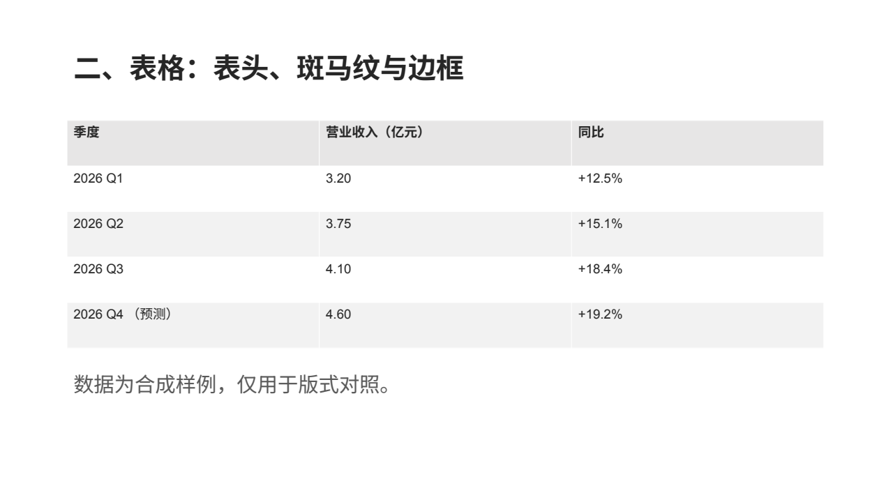
炭黑舞台、金铜与珊瑚、Avenir 大字，配图裁切与转场动效
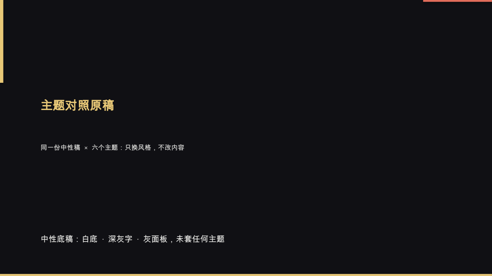
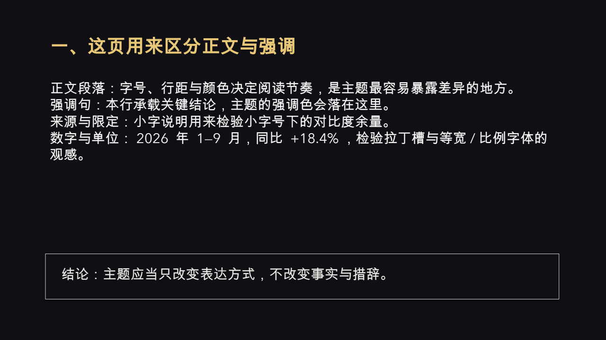
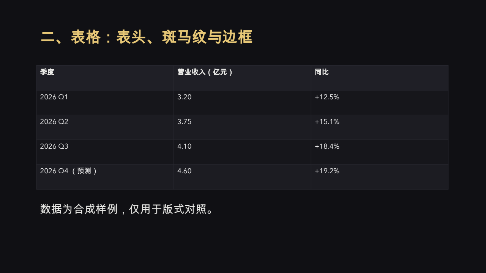
ink_diff = 只在内容像素上算的平均差（不被留白稀释，才是"风格差"）； hist_dist = 4×4×4 色彩直方图距离（配色构成）； page_diff = 整页平均差（按面积加权，浅色主题之间会偏小）； 内容占比 = 两页合并后的内容像素比例，用来判断这个 ink_diff 有多少样本支撑。
| 主题对 | ink_diff | hist_dist | page_diff | 内容占比 |
|---|---|---|---|---|
| wengao-minimal vs wengao-adaptive | 0.1884 | 0.0056 | 0.0419 | 16.5% |
| wengao-business vs wengao-adaptive | 0.2575 | 0.0381 | 0.0311 | 18.0% |
| wengao-basic vs wengao-adaptive | 0.2996 | 0.0378 | 0.0395 | 18.9% |
| wengao-basic vs wengao-minimal | 0.3086 | 0.0382 | 0.0534 | 9.4% |
| wengao-dark vs wengao-visual-dark | 0.3472 | 0.0454 | 0.0515 | 11.7% |
| wengao-basic vs wengao-business | 0.3524 | 0.0374 | 0.0322 | 11.7% |
| wengao-business vs wengao-minimal | 0.3731 | 0.0389 | 0.0596 | 9.9% |
| wengao-basic vs wengao-visual-dark | 0.4345 | 0.9806 | 0.8796 | 11.3% |
| wengao-minimal vs wengao-visual-dark | 0.4587 | 0.9762 | 0.8714 | 9.0% |
| wengao-business vs wengao-visual-dark | 0.4704 | 0.9796 | 0.8877 | 10.3% |
| wengao-dark vs wengao-minimal | 0.4718 | 0.9860 | 0.8519 | 12.0% |
| wengao-basic vs wengao-dark | 0.4824 | 0.9840 | 0.8730 | 13.9% |
| wengao-business vs wengao-dark | 0.4936 | 0.9807 | 0.8782 | 12.8% |
| wengao-dark vs wengao-adaptive | 0.6162 | 0.9824 | 0.8775 | 20.2% |
| wengao-adaptive vs wengao-visual-dark | 0.6241 | 0.9736 | 0.8972 | 17.4% |